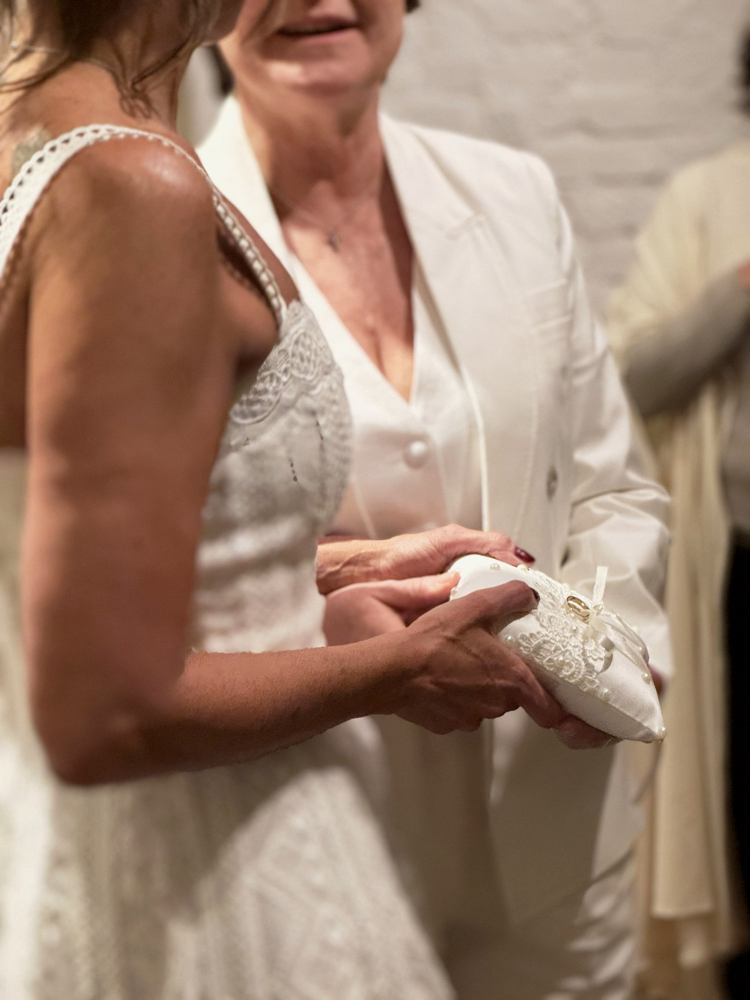
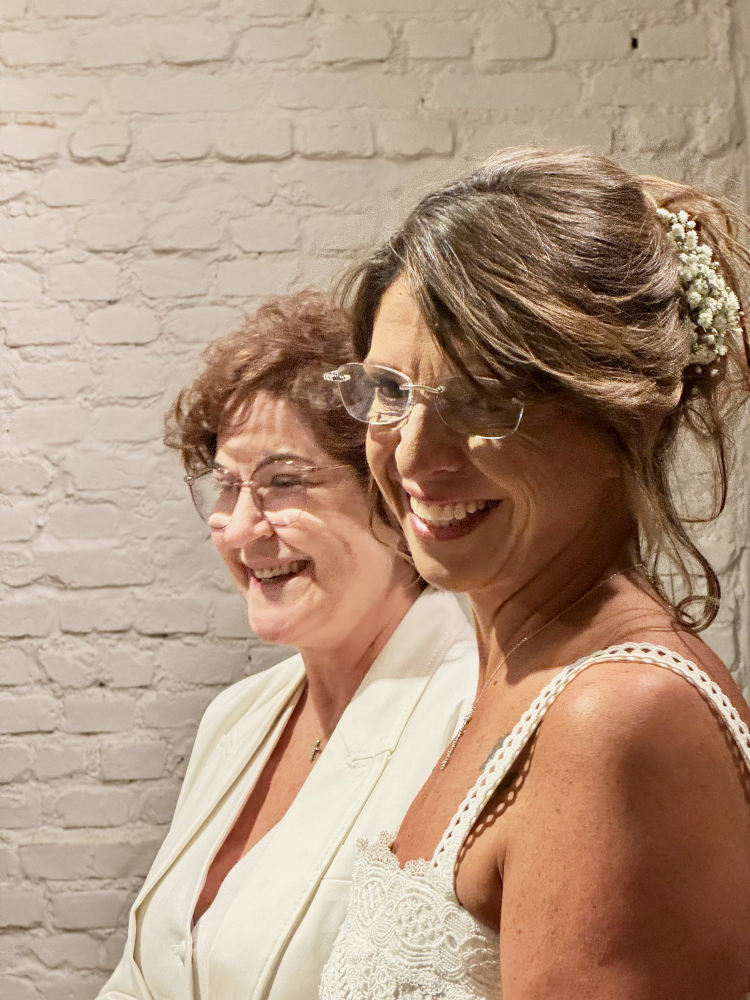
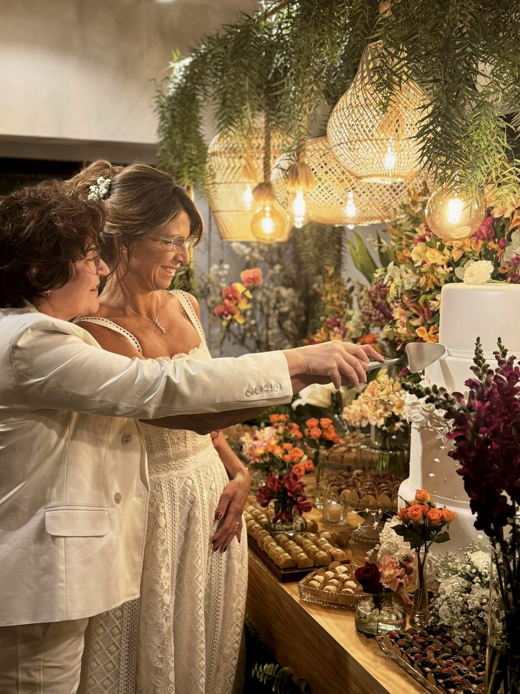
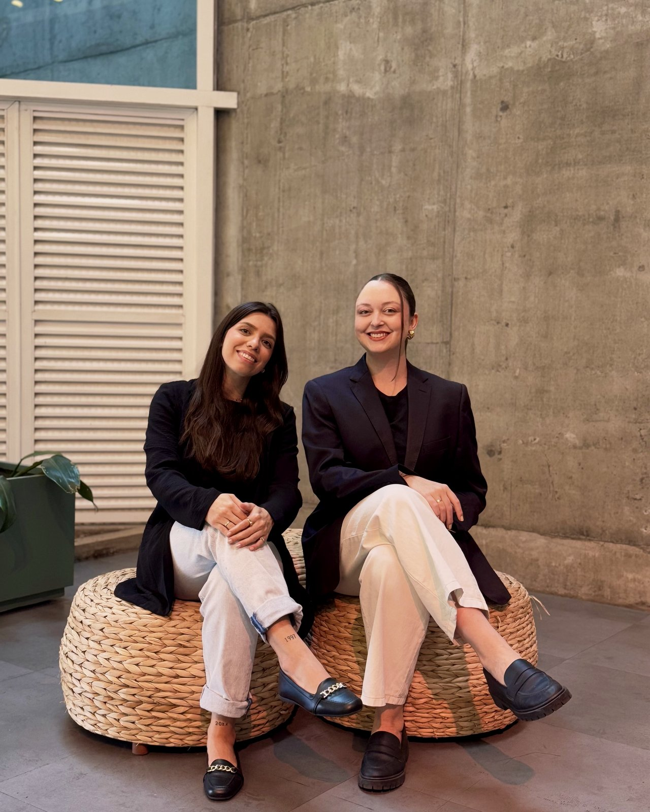

Bôdhi · Captação e Conteúdo para Redes Sociais
Histórias de amor,
contadas em movimento.
Captação autêntica e cinematográfica para o dia mais importante da sua história. Sem poses forçadas, só o que realmente aconteceu.

O que é storymaker
Uma narrativa do seu dia.
Storymaker é um jeito diferente de registrar um casamento: em vez de fotos posadas e ensaiadas, a gente documenta a história como ela realmente acontece, os detalhes, os olhares, as risadas escondidas, o clima de cada momento. Tudo pensado para viver de novo em fotos e vídeos curtos, prontos pra guardar e compartilhar.
A Bôdhi passa a oferecer esse serviço como parte da nossa expertise em contar histórias: agora, também para o dia mais importante da vida de um casal.
Portfólio
Cada casamento tem os seus capítulos
Uma seleção de momentos: da cerimônia à pista de dança, passando pelos detalhes que fazem cada celebração única.
Vídeos
O movimento por trás da imagem
Clipes curtos, editados com trilha sonora, pra reviver o ritmo e a emoção do dia.
O serviço
Storymaker Bôdhi
Um pacote pensado pra registrar tudo, sem interferir em nada. A gente circula discretamente pelo evento, com foto e vídeo em uma linguagem só.
- 01Cobertura fotográfica documental do início ao fim da celebração
- 02Vídeos curtos, prontos para redes sociais e para reviver o dia
- 03Edição com direção de cor e identidade autoral Bôdhi
- 04Entrega organizada em ambiente digital, com acesso facilitado

Vamos conversar
Conta pra gente
a história do seu dia.
Fale com a Bôdhi e monte o pacote de storymaker ideal para o seu casamento.
